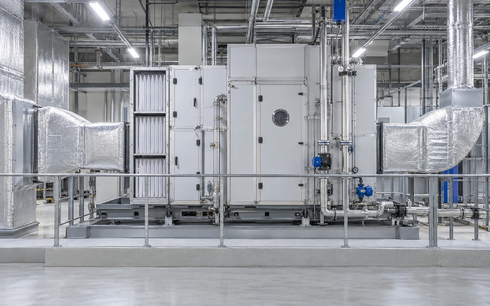
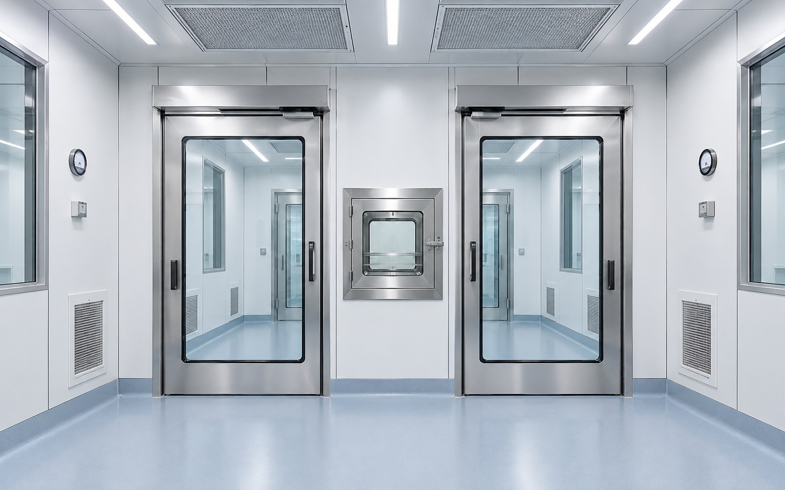

오염원을 줄이는 공간 계획
작업자와 자재, 설비의 이동 동선을 구분하고 차압과 기류를 고려해 교차오염 위험을 낮춥니다.
- 온도·습도·입자·정전기 등 제품 품질에 영향을 주는 환경요소 분석
- 공정 장비 발열과 외기 조건을 반영해 필요한 공조·제습 용량 산정
- 구역별 환경 기준을 명확히 나눠 과도한 설비 용량을 방지



민감한 생산공정에 최적화된 제어 환경을 설계합니다. FLOVEX는 공정 분석과 디지털 설계, 제작, 시공, 유지보수를 하나의 책임 있는 체계로 연결합니다.
온도와 습도, 청정도 요구조건을 분석해 민감한 생산공정에 적합한 환경을 구성합니다.
작업자와 자재, 설비의 이동 동선을 구분하고 차압과 기류를 고려해 교차오염 위험을 낮춥니다.


공조와 제습 설비를 공정 부하에 맞춰 구성해 생산구간별 목표 조건을 안정적으로 유지합니다.


열원과 공조 운전 조건을 함께 검토해 필요한 성능을 유지하면서 불필요한 에너지 사용을 줄입니다.

마감과 기밀, 필터와 설비 성능을 단계별로 확인하고 시운전 결과를 기록해 인수 기준을 명확히 합니다.

필터 교체와 정기점검, 설비 개선을 포함한 유지관리 체계로 장기적인 공정 안정성을 지원합니다.